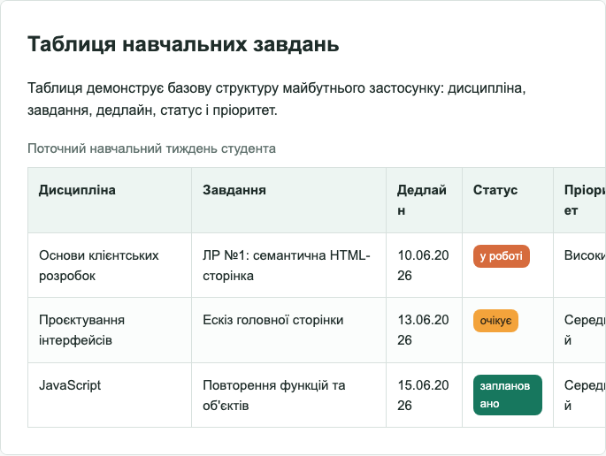
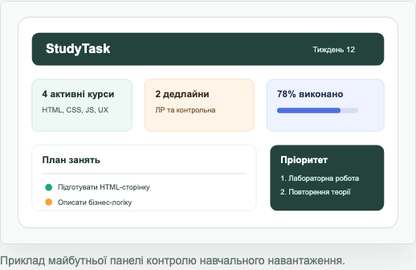
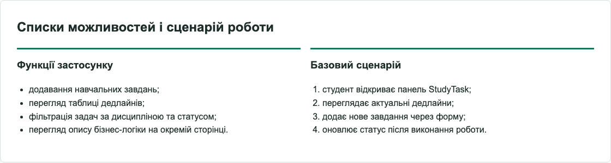

Лабораторна робота №1
Теги та атрибути HTML-документа. Структурна розмітка. Git, GitHub, робота з репозиторіями. Опис логіки власного WEB-застосунку.
Тема, мета, місце розташування ЛР №1.1
| Виконав | Єрещенко М.О., студент групи ІП-зп51 |
|---|---|
| Тема ЛР №1.1 | HTML-документ, семантична структура сторінки, GitHub, репозиторії та бізнес-логіка власного WEB-застосунку. |
| Мета ЛР №1.1 | Отримати практичні навички роботи з HTML-документом, семантичною версткою, таблицями, зображеннями, списками, формами, посиланнями та описом логіки WEB-застосунку. |
| Назва власного WEB-застосунку | StudyTask - навчальний планувальник завдань студента. |
| Локальне розташування WEB-застосунку | IP-zp51_appWEB-YereshchenkoMO-FIOT-2025/index.html |
| Репозиторій WEB-застосунку | додати після публікації на GitHub Назва: IP-zp51_appWEB-YereshchenkoMO-FIOT-2025 |
| Жива сторінка WEB-застосунку | додати після GitHub Pages Локальна сторінка доступна за посиланням вище. |
| Репозиторій звітного HTML-документа | додати після публікації на GitHub Назва: IP-zp51_appRECORD-YereshchenkoMO-FIOT-2025 |
| Жива сторінка звітного HTML-документа | додати після GitHub Pages Поточний файл: index.html у цій папці. |
Тема та мета власного WEB-застосунку
Тема застосунку - планування навчальних завдань студента за дисциплінами, дедлайнами, пріоритетами та статусом виконання.
Мета створення StudyTask - надати студенту простий інструмент для контролю навчального навантаження, щоб своєчасно бачити актуальні лабораторні роботи, етапи виконання та найближчі дедлайни.
Опис бізнес-логіки
Предметна область застосунку охоплює індивідуальне планування навчання. Користувачем є студент, який створює завдання, прив'язує їх до дисциплін, визначає дедлайн, пріоритет і статус виконання.
Основний процес: студент додає завдання, система показує його у таблиці, виділяє найближчі дедлайни та допомагає контролювати прогрес виконання. Детальний опис винесено на сторінку business-logic.html.
Функціональні та нефункціональні вимоги
| Тип вимог | Опис |
|---|---|
| Функціональні | Додавання навчального завдання через форму; відображення задач у таблиці; збереження дисципліни, дедлайну, статусу та пріоритету; перехід на сторінку бізнес-логіки; показ короткої статистики тижня. |
| Нефункціональні | Семантична HTML-структура; адаптивність для різних екранів; доступні поля форми з label; зрозуміла навігація; швидке завантаження сторінок; мінімізація зайвих персональних даних. |
Структура головної сторінки WEB-застосунку
Головна сторінка побудована за принципами семантичної верстки. Використано елементи header, nav, main, section, article, aside, figure, figcaption та footer.
<header class="site-header">
<a class="brand" href="index.html">StudyTask</a>
<nav class="site-nav" aria-label="Основна навігація">
<a href="#schedule">Розклад</a>
<a href="#features">Можливості</a>
<a href="#request">Додати завдання</a>
<a href="business-logic.html">Бізнес-логіка</a>
</nav>
</header>
<main>
<section class="hero" aria-labelledby="hero-title">...</section>
<section id="schedule" class="panel">...</section>
<section id="features" class="panel">...</section>
<section id="request" class="panel">...</section>
</main>HTML-код таблиці та результат
Для таблиць застосовують теги table, caption, thead, tbody, tr, th і td. Атрибут scope допомагає пов'язати заголовок із рядком або стовпцем, а colspan та rowspan об'єднують комірки.
<table class="schedule-table">
<caption>Поточний навчальний тиждень студента</caption>
<thead>
<tr>
<th scope="col">Дисципліна</th>
<th scope="col">Завдання</th>
<th scope="col">Дедлайн</th>
<th scope="col">Статус</th>
<th scope="col">Пріоритет</th>
</tr>
</thead>
<tbody>
<tr>
<td>Основи клієнтських розробок</td>
<td>ЛР №1: семантична HTML-сторінка</td>
<td><time datetime="2026-06-10">10.06.2026</time></td>
<td><span class="tag hot">у роботі</span></td>
<td>Високий</td>
</tr>
</tbody>
</table>
HTML-код зображення та результат
Для вставлення зображення використовується тег img. Обов'язковим для доступності є атрибут alt, який описує вміст зображення. Атрибути src, width і height задають шлях до файлу та його розміри.
<figure class="hero-media">
<img src="assets/study-dashboard.svg"
alt="Ілюстрація панелі StudyTask з курсами, дедлайнами і планом занять"
width="960"
height="560">
<figcaption>Приклад майбутньої панелі контролю навчального навантаження.</figcaption>
</figure>
HTML-код списків та результат
Маркірований список створюється тегом ul, нумерований - тегом ol, а кожен пункт списку розміщується у li. Атрибут type може змінювати тип маркера або нумерації.
<ul>
<li>додавання навчальних завдань;</li>
<li>перегляд таблиці дедлайнів;</li>
<li>фільтрація задач за дисципліною та статусом;</li>
</ul>
<ol>
<li>студент відкриває панель StudyTask;</li>
<li>переглядає актуальні дедлайни;</li>
<li>додає нове завдання через форму;</li>
</ol>
Контрольні питання
1. Яка структура HTML-документу?
Типова структура містить doctype, кореневий елемент html, службову частину head з метаданими та видиму частину body з контентом сторінки.
2. Дати визначення тега.
Тег - це елемент мови HTML, який позначає структуру або призначення частини документа. Більшість тегів мають відкривальну і закривальну форму, наприклад <p>...</p>.
3. Які теги використовуються при роботі з таблицями?
Основні теги: table, caption, thead, tbody, tfoot, tr, th, td, colgroup, col.
4. Які теги використовуються при роботі із зображеннями?
Найчастіше використовують img, figure, figcaption, picture і source.
5. Які теги використовуються при роботі зі списками?
Для списків використовують ul, ol, li, а для списків визначень - dl, dt, dd.
6. Перерахувати засоби опису таблиць в HTML.
Таблиці описують через заголовок caption, рядки tr, клітинки td, заголовкові клітинки th, групи рядків thead, tbody, tfoot, атрибути scope, colspan і rowspan.
Висновки
У лабораторній роботі №1 створено HTML-структуру власного WEB-застосунку StudyTask і звітний HTML-документ. На головній сторінці застосовано семантичні теги, заголовки різних рівнів, зображення, таблицю, маркірований і нумерований списки, форму та посилання на сторінку з бізнес-логікою. У звіті наведено тему, мету, опис предметної області, вимоги, приклади HTML-коду, теоретичні відомості та відповіді на контрольні питання.
Список літератури та електронних джерел
Лабораторна робота №2
Розділ буде заповнено після виконання наступної лабораторної роботи.
Лабораторна робота №4
Розділ буде заповнено після виконання відповідної лабораторної роботи.
Лабораторна робота №5
Розділ буде заповнено після виконання відповідної лабораторної роботи.
Лабораторна робота №6
Розділ буде заповнено після виконання відповідної лабораторної роботи.
Лабораторна робота №7
Розділ буде заповнено після виконання відповідної лабораторної роботи.